选区菜单与注音：静态稿评审板
w00025 t20，第 1 轮。来源是开发者试用 t04、t05 之后提的问题：选区菜单的文字颜色、高亮没有默认色，菜单有点简陋；注音的交互没做好；菜单的动效；拖选时注音被选中、改格式后注音乱跑。
图是在草稿 worktree 的 Lab 里用真实的 nb-ui 组件与主题变量搭的静态稿（亮色、nbook 主题），正文写死，不接编辑内核。三道题都是选答，答哪道都行。
现状 参照
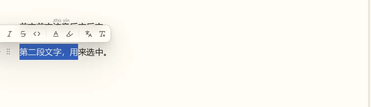
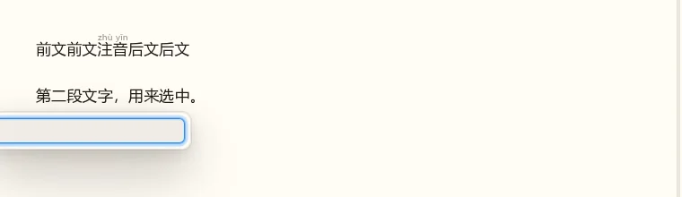
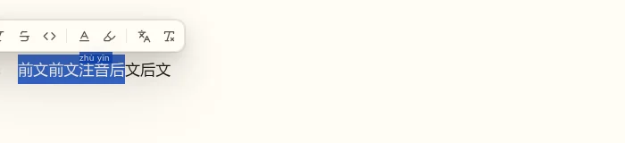
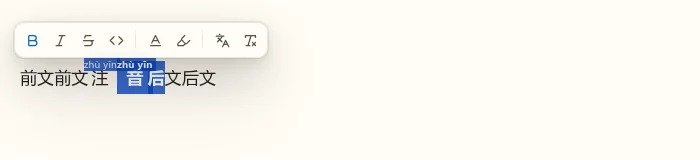
问题 1：文字颜色与高亮怎么给默认色 待定
A 拆分按钮
左半边一点就上色，用上次用过的颜色（第一次是红色文字、黄色高亮），图标下的色条就是这个颜色；右半边的小箭头开色板。参照 Word、WPS、Google 文档。
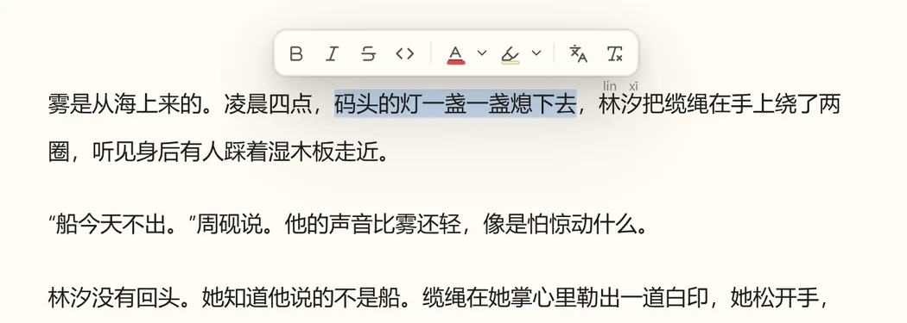
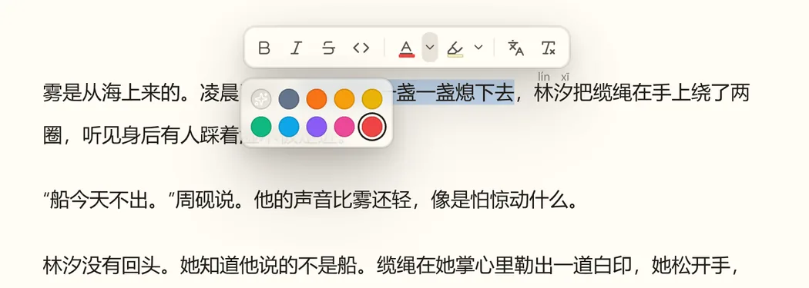
B 合成一个下拉
一个“A▾”，图标的底色与色条显示上次的背景色与文字色；点了开一个面板，文字颜色、背景颜色各一组。比 A 省一个按钮宽，但没有一键上色，每次都要点两下。参照飞书、Notion。
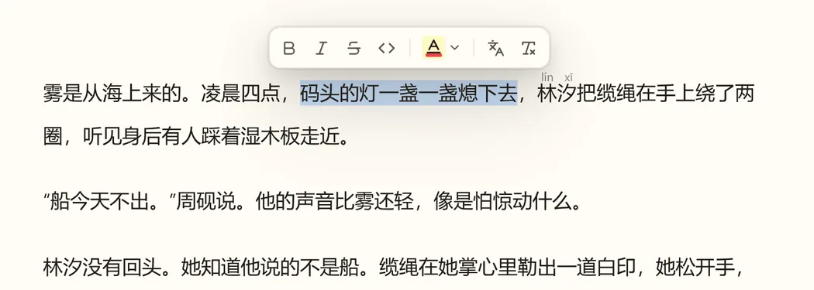
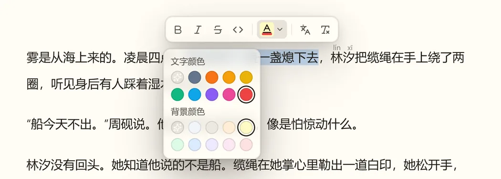
问题 2：选区菜单加哪些项 待定
下面的图用的是问题 1 的 A。“加批注”在 t13 已定要进选区菜单，随 t13 做，这里不问。两项都加时菜单从约 280px 宽到约 400px。
最前面加块类型下拉
与固定工具栏的块类型同一个下拉：正文、标题 1–3，带快捷键。选中标题里的字时一眼看出它是第几级，不用回到工具栏去改。
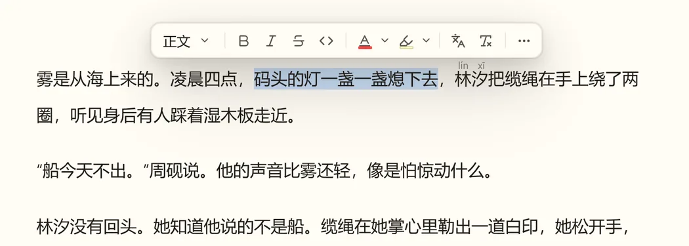
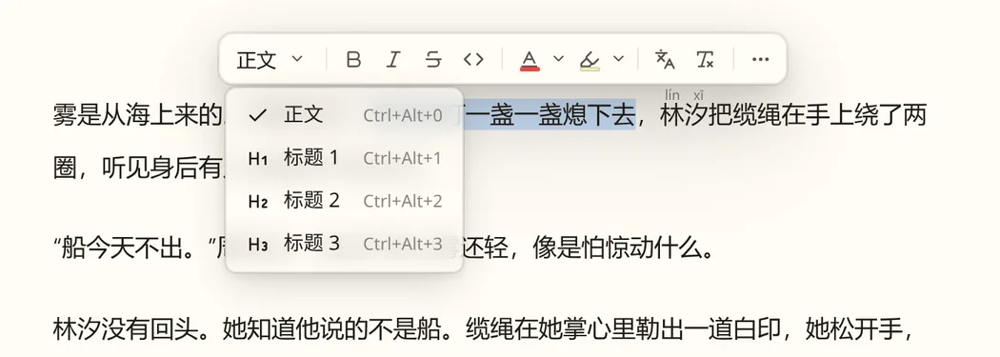
末尾加“⋯”
放上标、下标（现在只在固定工具栏的“⋯”里）。以后插件贡献的项多了，放不下的也收进这里。
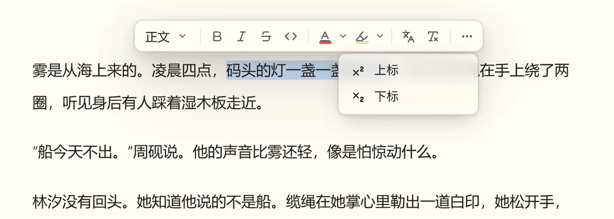
问题 3：注音怎么写、怎么改 待定
两个候选共用的部分：
- 选中的文字里有注音时，菜单上的注音按钮显示为按下（下图）。点它，或者直接点注音小字，打开修改。
- 写注音的时候原来的选区保持高亮，看得出在给哪段字注音。回车确定，Esc 取消。
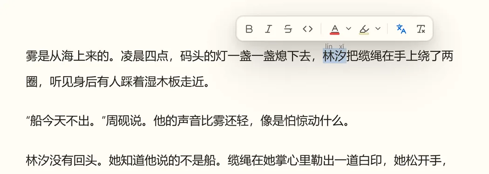
A 一行卡片
贴在文字下方的一行卡片，外框、阴影与 t13 定下的批注卡片相同；注音直接写在卡片里，没有输入框的框。右边是确定；已有注音时多一个“移除注音”。
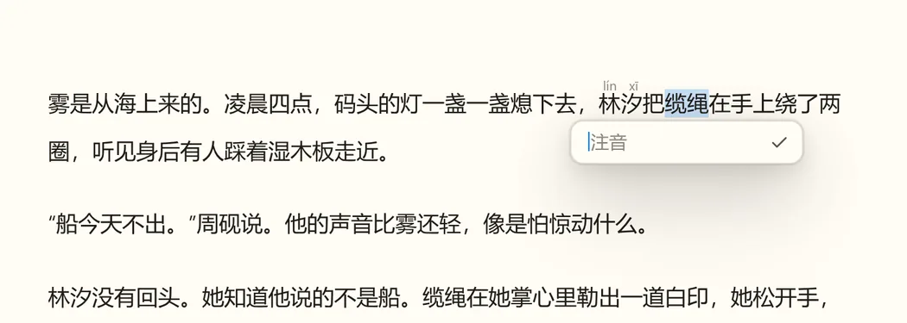
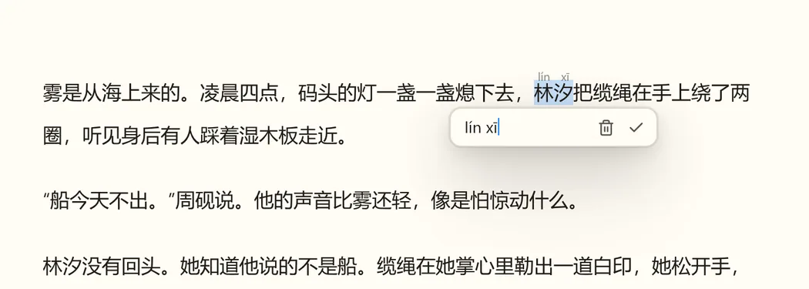
B 在注音的位置上直接写
不弹卡片：文字上方注音的位置变成可写的一小格，写什么就显示什么。没有按钮，清空后回车就是移除。代价：注音的字是正文的 0.6 倍，那一格很小、不好点；移除没有看得见的入口。
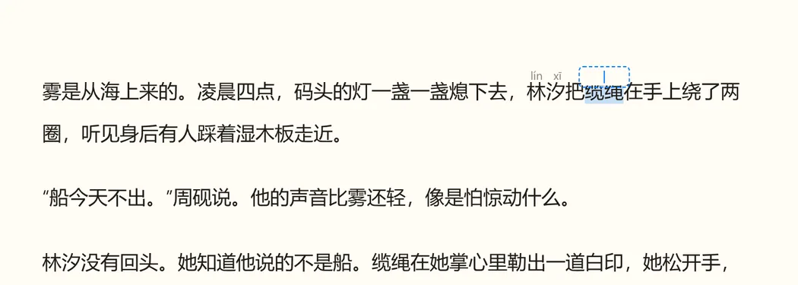
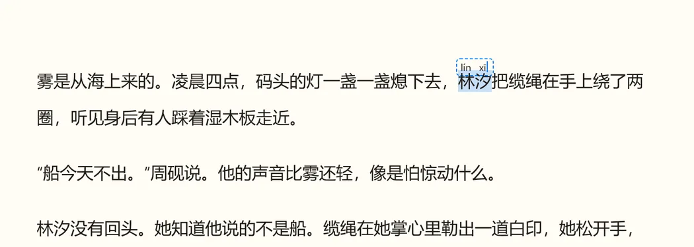
不用定、直接修的 说明
- 拖选不再选中注音小字。复制出来的文字本来就不带注音，只是显示的问题。
- 注音当成一个整体。选区只盖住注音的一部分时，改格式（粗体、斜体、删除线、行内代码、颜色、高亮、上下标、清除格式、设注音）先把选区扩到整个注音再改，不再拆成两段。另一种做法是允许注音的正文里有局部格式，要改 Markdown 方言，别的渲染器也认不了，不采用。
- 菜单的入场动效。选区菜单、注音输入、斜杠菜单现在没有入场动画，直接出现；补成设计语言“浮层入退场的编排是固定的”那一套：透明度加从 0.96 放大到 1，时长
--motion-fast，入场用主曲线--ease-layout，退场用--ease-dialog-leave。右键菜单、块手柄菜单、色板、工具栏下拉已经是这样。 - 源码编辑器的底色改成稿纸底（
--bg-panel）。八套配色上语法色的对比度都还达标；两套护眼配色的桌面与稿纸本来同色，不变。